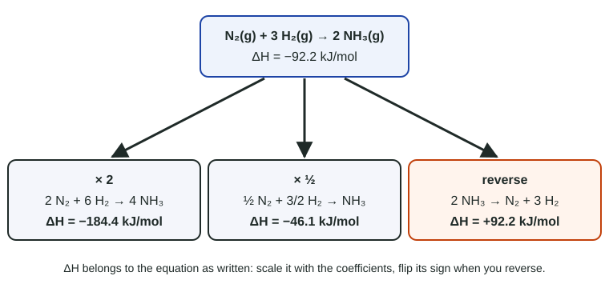

Introduction to Enthalpy of Reaction
The enthalpy of reaction, ΔH, is the energy change for a reaction exactly as written, per mole of reaction.
Part 1 · Hook
Why this matters
Part 2 · Before you start
What this builds on
Part 3 · Prerequisite check
Quick check before you start
1. In 2 H₂ + O₂ → 2 H₂O, how many moles of H₂O form from 3.0 mol of O₂?
- 6.0 mol
- 3.0 mol
- 1.5 mol
- 2.0 mol
Show the answer
Mole ratio 2 H₂O : 1 O₂, so 3.0 mol O₂ × 2 = 6.0 mol H₂O.
- Correct: 6.0 mol:
- 3.0 mol:
- 1.5 mol:
- 2.0 mol:
2. If the surroundings gain 50 kJ from a reaction, q for the reaction is
- −50 kJ
- +50 kJ
- 0 kJ
- +100 kJ
Show the answer
Energy gained by the surroundings is lost by the system: opposite sign.
- Correct: −50 kJ:
- +50 kJ:
- 0 kJ:
- +100 kJ:
Part 4 · See it
See it first

Part 5 · Step by step
How it works, step by step
- A thermochemical equation lists ΔH for the reaction as writtenΔH is per mole of reaction: the mole amounts the coefficients give
- Twice as much reactstwice the energy is transferred, so ΔH scales with the coefficients
- The reaction is run backwardthe energy flows the other way, so ΔH changes sign
- A given amount of a substance reactsq = moles × (ΔH ÷ that substance's coefficient), using the limiting reactant
- The system and surroundings exchange that energyq(surroundings) = −q(reaction)
Part 6 · Key ideas
Key ideas
- A thermochemical equation is a balanced equation with states and the enthalpy of reaction, ΔH, per mole of reaction as written.
- Multiply the equation, multiply ΔH; reverse it, change the sign of ΔH.
- Energy for an amount: convert to moles, then use ΔH ÷ coefficient as a conversion factor (kJ per mol of that substance).
- Base the energy on the limiting reactant.
- States matter: forming H₂O(g) instead of H₂O(l) releases less energy.
Part 7 · Misconception
A common mistake
The wrong idea: If the equation has ΔH = −92.2 kJ/mol, forming 1 mol of NH₃ releases 92.2 kJ.
What actually happens: The −92.2 kJ belongs to the equation as written, which forms 2 mol of NH₃. One mole of NH₃ releases half, 46.1 kJ.
Part 8 · Check yourself
Check yourself
Exam-style questions. Anything you miss goes into your review queue.
Data table
Four thermochemical equations
Each ΔH is for the reaction exactly as written, in kJ per mole of reaction, at 25 °C and 1 atm.
| Equation | Reaction | ΔH (kJ/mol) |
|---|---|---|
| A | C₃H₈(g) + 5 O₂(g) → 3 CO₂(g) + 4 H₂O(l) | −2220 |
| B | N₂(g) + 3 H₂(g) → 2 NH₃(g) | −92.2 |
| C | 2 HgO(s) → 2 Hg(l) + O₂(g) | +181.6 |
| D | CaCO₃(s) → CaO(s) + CO₂(g) | +178.3 |
1. Using Equation A, what is q for the reacting system, in kJ, when 11.0 g of propane, C₃H₈ (44.10 g/mol), burns completely?
Type a number and its unit.
Show the answer
n(C₃H₈) = 11.0 g ÷ 44.10 g/mol = 0.2494 mol. One mole of reaction burns 1 mol of C₃H₈, so q = 0.2494 mol × (−2220 kJ/mol) = −553.7 → −554 kJ (three significant figures, from 11.0 g). Negative: the system releases energy.
- Answer: -554 kJ
2. Using Equation B, what is the enthalpy change, in kJ, for forming 1.00 mol of NH₃(g) from N₂ and H₂?
Type a number and its unit.
Show the answer
Equation B makes 2 mol of NH₃ for −92.2 kJ. For 1.00 mol, halve it: 1.00 mol NH₃ × (−92.2 kJ / 2 mol NH₃) = −46.1 kJ.
- Answer: -46.1 kJ
3. What is ΔH for the reaction 2 NH₃(g) → N₂(g) + 3 H₂(g)?
- −92.2 kJ/mol
- +46.1 kJ/mol
- +92.2 kJ/mol
- −184.4 kJ/mol
Show the answer
Reversing a thermochemical equation changes the sign of ΔH and keeps its size: +92.2 kJ/mol.
- −92.2 kJ/mol: Reversing a reaction flips the sign of ΔH: decomposing ammonia absorbs what forming it released.
- +46.1 kJ/mol: The coefficients match Equation B exactly (2 NH₃), so the size stays 92.2 kJ.
- Correct: +92.2 kJ/mol: Right: this is Equation B reversed, so ΔH has the same size and the opposite sign.
- −184.4 kJ/mol: Nothing is doubled here, and the sign must flip on reversing.
4. Using Equation D, how much energy, in kJ, must be absorbed to decompose 50.0 g of CaCO₃ (100.09 g/mol)?
Type a number and its unit.
Show the answer
n = 50.0 g ÷ 100.09 g/mol = 0.4996 mol; q = 0.4996 mol × 178.3 kJ/mol = 89.07 → 89.1 kJ absorbed.
- Answer: 89.1 kJ
5. Using Equation C, how much energy, in kJ, is absorbed when enough HgO decomposes to make 4.00 g of O₂ (32.00 g/mol)?
Type a number and its unit.
Show the answer
n(O₂) = 4.00 g ÷ 32.00 g/mol = 0.125 mol. One mole of reaction makes 1 mol of O₂ and absorbs 181.6 kJ, so q = 0.125 mol × 181.6 kJ/mol = 22.7 kJ absorbed.
- Answer: 22.7 kJ
6. Using CH₄(g) + 2 O₂(g) → CO₂(g) + 2 H₂O(l), ΔH = −890.3 kJ/mol, what mass of methane (16.04 g/mol), in g, must burn to release 1.00 × 10³ kJ?
Type a number and its unit.
Show the answer
n(CH₄) = 1.00 × 10³ kJ ÷ 890.3 kJ/mol = 1.1232 mol; mass = 1.1232 mol × 16.04 g/mol = 18.02 → 18.0 g.
- Answer: 18.0 g
7. In an open vessel at constant pressure, N₂(g) + 3 H₂(g) → 2 NH₃(g), ΔH = −92.2 kJ/mol, runs once as written. What is q for the surroundings?
- +92.2 kJ
- −92.2 kJ
- +46.1 kJ
- 0 kJ, because the energy stays in the reacting gases
Show the answer
q(surroundings) = −q(reaction) = −(−92.2 kJ) = +92.2 kJ.
- Correct: +92.2 kJ: Right: the reaction releases 92.2 kJ and the surroundings absorb it.
- −92.2 kJ: That is q for the reaction. The surroundings have the opposite sign.
- +46.1 kJ: The reaction runs once as written, making 2 mol of NH₃, so all 92.2 kJ is transferred.
- 0 kJ, because the energy stays in the reacting gases: Energy crosses the boundary between the reacting gases and everything around them, so the surroundings warm.
Part 9 · Summary
Summary
Part 10 · Up next
What comes next
Part 11 · Connections